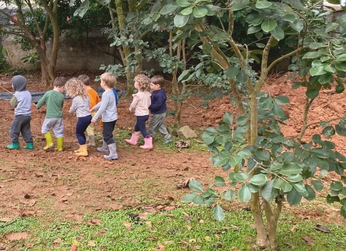
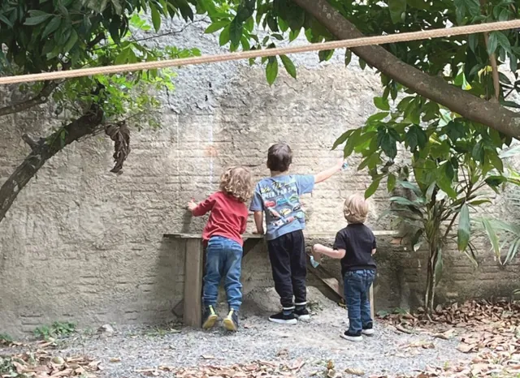
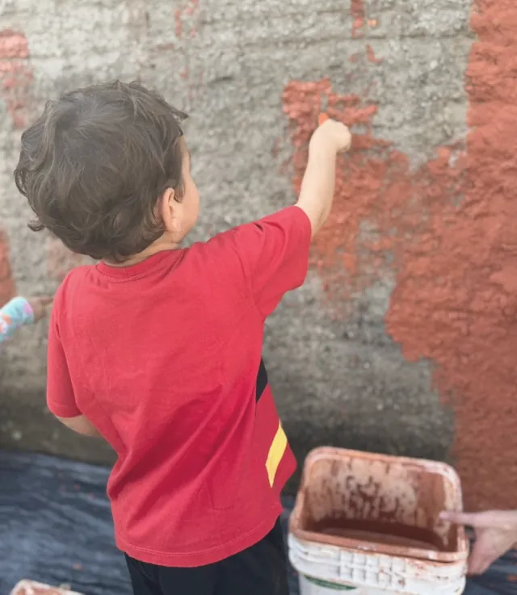
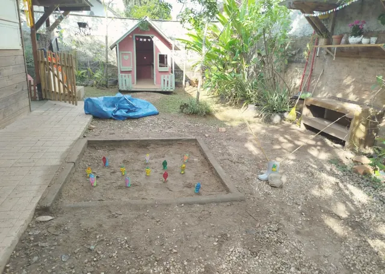
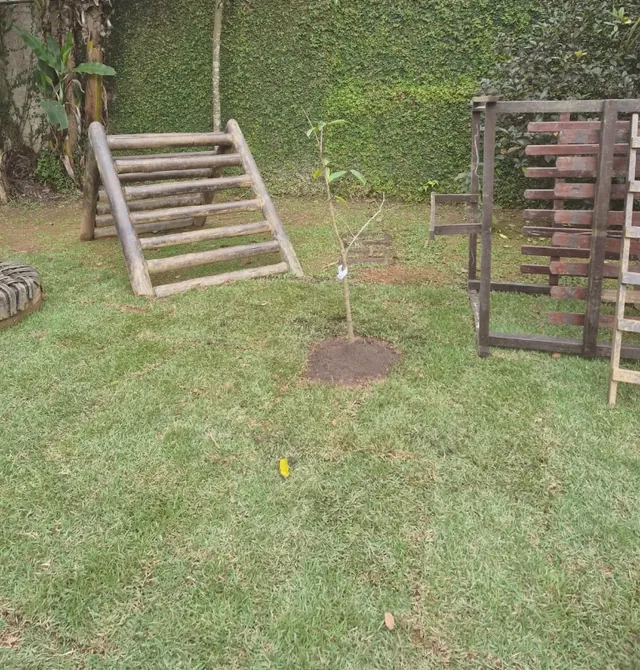

Campanha · Dia de Doar 2026
Dia de Doar: a generosidade também se cultiva.
1º de dezembro de 2026 · a terça-feira da generosidade
No Dia de Doar, pessoas do Brasil inteiro escolhem uma causa para apoiar. Convidamos você a escolher a infância: sua doação para a AFLOR ajuda a manter vivos os pátios, a arte e a natureza onde as crianças do Jardim Waldorf Ciranda crescem livres.
A campanha Dia de Doar 2026 foi encerrada. Muito obrigado a cada pessoa que semeou conosco! 🌸
Você ainda pode apoiar a AFLOR durante todo o ano com uma doação livre, pontual ou periódica.
Fazer uma doação livre
O movimento
O que é o Dia de Doar?
Um convite para que pessoas, organizações e empresas dediquem um dia do ano à generosidade e fortaleçam a cultura de doação no Brasil.
-
Um movimento global
O Dia de Doar é a versão brasileira do #GivingTuesday, movimento que nasceu em 2012 e hoje mobiliza pessoas no mundo inteiro em torno de um mesmo gesto: doar.
-
Uma data para todo o Brasil
Acontece sempre na terça-feira seguinte ao Dia de Ação de Graças. É um dia para doar dinheiro, tempo, talento ou voz às causas que transformam a vida perto de nós.
-
Joinville também doa
A cultura de doação ganha força na nossa cidade. Conheça o projeto de lei que trata do Dia de Doar em Joinville.
Ler o PL de Joinville (PDF)
Por que doar para a AFLOR
Cada doação rega o mesmo jardim
Os recursos do Dia de Doar ajudam a sustentar o dia a dia do Jardim Waldorf Ciranda e a ampliar o acesso a uma educação para a liberdade em Joinville.
- Natureza e brincar livrePátios vivos, com árvores, terra, areia e espaço para explorar.
- Arte com materiais naturaisBarro, giz, cera de abelha, aquarela: a criatividade nasce das mãos.
- Espaços cuidados com carinhoManutenção dos ambientes, brinquedos e materiais pedagógicos.
- Educação mais acessívelInclusão socioeconômica para que mais famílias possam fazer parte.



Como doar
Doe pelo PIX em três passos
Qualquer valor faz diferença. Doações pontuais ou mensais são igualmente bem-vindas.
- Abra o app do seu bancoEscolha a opção “Pagar com PIX” ou “Ler QR Code”.
- Escaneie o QR Code ao ladoOu, se preferir, copie a chave PIX da AFLOR.
- Conte pra genteDeixe seus dados logo abaixo para recebermos você com carinho e agradecermos sua doação.

Depois de doar
Conte pra gente
Queremos agradecer e manter você por perto. Deixar seus dados é opcional e não é necessário para doar.
- Envie pelo WhatsApp ou por e-mail (contato.aflor@gmail.com).
- Não peça nem envie comprovantes com dados bancários por aqui.
- Seus dados não ficam armazenados neste site.
Participei do Dia de Doar
Os campos marcados como opcionais podem ficar em branco.